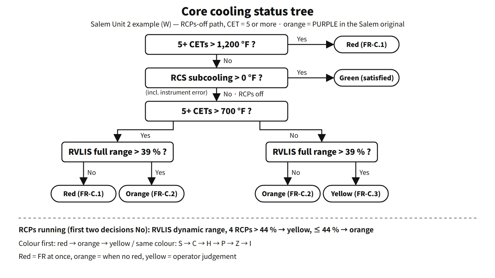

Accidents, Safety Analysis & Severe Accidents · C-SA-020
Critical Safety Functions (CSF) — Monitored Variables, Status Trees, Priorities and the SPDS for the Six Functions
Keep the functions and the barriers hold, whatever the cause: six status trees read from measured variables, handled by colour and then priority.
Critical safety functions (CSFs) are the set of functions that, if maintained, keep the fuel, RCPB and containment barriers intact regardless of what caused the accident. Operators judge the status of each function from measured variables and restore the threatened functions first.
The Westinghouse (W) Emergency Response Guidelines (ERGs) define six: subcriticality, core cooling, heat sink, primary system integrity, containment and inventory. This note covers the monitored variables, the decision values and the tree logic for each function.
Principle and mechanism
Origin — "protect the functions and you need not know the cause"
Corcoran and co-workers (1981, Nuclear Technology, vol. 55) grouped the operator actions that prevent core melt and reduce releases into "safety functions". They proposed ten functions, covering reactivity; RCS inventory and pressure; core and RCS heat removal; containment isolation, temperature and pressure, and combustible gas; maintenance of vital auxiliaries; and control of indirect releases. After TMI-2, NUREG-0737 I.C.1 and NUREG-0899 (1982) required symptom-based EOPs. The reactor owners' groups built the concept into their procedures: W with six CSFs and status trees (CSFSTs), the CE type with a function-by-function safety function status check (SFSC).
The six CSFs — barriers protected and variables monitored
| CSF (priority) | Barrier protected | Main monitored variables | Red/orange example | Recovery procedure gist |
|---|---|---|---|---|
| ① Subcriticality S | Fuel and cladding | Power-range power, intermediate- and source-range SUR | Power ≥ 5 % red; positive intermediate-range SUR orange | FR-S.1 manual trip, emergency boration |
| ② Core cooling C | Fuel and cladding | CET, subcooling, RVLIS | CET > 1,200 °F red | FR-C.1 maximize SI, depressurize SGs, start RCPs |
| ③ Heat sink H | RCPB (indirectly the core) | SG narrow-range level, total feedwater flow, SG pressure | Red when both level and feed are insufficient | FR-H.1 restore feedwater; if that fails, feed and bleed |
| ④ Primary system integrity P | Reactor vessel | Cold-leg cooldown rate and temperature, RCS pressure (P-T) | Cooldown > 100 °F in 60 min + beyond Limit A red | FR-P.1 stop cooldown, depressurize, hold temperature |
| ⑤ Containment Z | Containment | Containment pressure, sump level, radiation | Above design pressure red | FR-Z.1 confirm sprays, fan coolers, isolation |
| ⑥ Inventory I | RCS inventory (indicator) | Pressurizer level, RVLIS upper range | Yellow only | FR-I.1–3 adjust charging and letdown, vent voids |
The decision values are from a W four-loop plant (the Salem Unit 2 CSFST basis document) and differ from plant to plant. The heat sink tree has no orange path. The inventory tree's unsatisfied paths are yellow only, because inventory is an early indicator for the other functions. The Salem procedure writes orange as PURPLE; procedure numbers here follow the ERG notation (FR-x.y).
![Cutaway of an upper reactor vessel marking a core exit thermocouple point and the RVLIS differential pressure tap, beside the Westinghouse core cooling status tree: five or more CETs above 1,200 °F gives red FR-C.1; RCS subcooling above 0 °F gives green; with RCPs running, RVLIS dynamic range above 44, 30, 20 or 13 percent for 4, 3, 2 or 1 pumps gives yellow FR-C.3, otherwise orange FR-C.2; with RCPs off, CETs above 700 °F combined with RVLIS full range above or below 39 percent give red, orange or yellow](../../assets/images/concepts/c-sa-020-critical-safety-functions/fig1-core-cooling-status-tree.webp)
Reading a status tree — the core cooling example
The tree is a binary decision path read from the top down with yes/no answers.
- Five or more CETs > 1,200 °F (649 °C): most of the coolant is gone and the steam is superheated. Red; go to FR-C.1. This value already includes the instrument uncertainty (about 200 °F).
- Subcooling > 0: if satisfied, green.
- RCPs running: if the RVLIS dynamic range is below the value for 50 % void fraction (44 % with four pumps), orange FR-C.2; if above, yellow FR-C.3.
- RCPs off: combine CET above 700 °F (371 °C) with RVLIS full range 39 %. The 39 % is a collapsed level of 3.5 ft above the bottom of the core plus uncertainty. If both are bad, red; if one is bad, orange; if both are fine, yellow.
Hot-leg temperature is not used for the decision, because in some core-uncovery scenarios it responds later than the CETs. "Five or more" is that plant's condition for screening out failed thermocouples.
Colours and priority
| Colour | Meaning | Operator action |
|---|---|---|
| Red | Extreme challenge | Stop the procedure in progress and go to the FR immediately |
| Orange | Severe challenge | Enter when there is no red |
| Yellow | Not satisfied | Operator judgement when there is no red or orange |
| Green | Satisfied | Keep monitoring |
The priority S → C → H → P → Z → I is the order of handling when the same colour appears in several trees at once. A red in any tree comes before any orange. After an FR's actions are complete and the operator returns to the original procedure, the same colour may remain (for example, the containment tree); whether to repeat it then follows the return instruction of that FR.
What it means in a plant
When and how often to monitor (2024 exam, session 4, Q5)
- Start: monitoring begins when E-0 (reactor trip or safety injection) directs it, or on transfer from E-0 to another EOP. Right after the trip, E-0's immediate actions come first. If E-0 step 1 fails to confirm reactor trip (ATWS), however, the operator goes straight to FR-S.1. Some plants implement tree monitoring in parallel with the E-0 diagnostic steps (NRC public plant documents), so add "per the unit's procedures" for the start time.
- Method: all six trees are checked and logged together at first, and then monitored continuously. In the Salem example, once all are green or yellow and stable, the interval can be relaxed to 15 minutes on the CRS's instruction.
- End: CSFST monitoring ends when the operator leaves the EOP network. During ECA-0.0 (loss of all AC power), the trees are only monitored and the operator does not transfer to FRs.
![Timeline from reactor trip and safety injection through E-0 immediate actions, start of monitoring when E-0 directs it or on transfer to another EOP, checking and logging all six trees, continuous monitoring relaxed up to 15 minutes when stable, and the end of CSFST monitoring on leaving the EOP network; a matrix of FR procedures by colour for the subcriticality, core cooling, heat sink, integrity, containment and inventory trees, with no orange path for heat sink and yellow only for inventory; and actions by colour](../../assets/images/concepts/c-sa-020-critical-safety-functions/fig2-monitoring-timing-priority.webp)
South Korean standard plants — means-based judgement
The OPR1000 and APR1400 follow the CE structure. What is judged is the success of each function's success path (the equipment in use). The criteria for core and RCS heat removal path HR-1 (SG cooling without SIS operation) in the Hanbit 3·4 recovery procedure are:
- at least one SG with wide-range level 23.7–90 % or feedwater above 35 lps;
- RCS ΔT < 10 °C (RCPs running) or < 32 °C (RCPs off);
- subcooling based on CET ≥ 15 °C;
- upper head level > 16 %.
If not satisfied, the operator moves to the next path on the resource tree (cooling with SIS operation → once-through cooling). W emphasizes diagnosing the function status to select the FR procedure; the CE type emphasizes judging which means is keeping the function.
SPDS — the CSFs on one screen
NUREG-0696 (1981) defined the SPDS in the functional criteria for emergency response facilities. NUREG-0737 Supplement 1 (1982) set the minimum information as five functions: reactivity control, core cooling and primary heat removal, RCS integrity, radioactivity control and containment conditions. Because implementation was weak, the NRC followed up with GL 89-06 and NUREG-1342. The SPDS is an auxiliary display; decisions are confirmed on safety-grade indicators (at Salem, the CET display is the only exception). In the APR1400, SPADES+ provides CSF displays and alarms integrated into the main control room design.
Boundary with the SAMG
The depressurization and RCP start of FR-C.1 may not work. If the CET then keeps rising above 1,200 °F, the operator moves to the SAMG. A red core cooling tree is not by itself SAMG entry. South Korea's SAMG entry condition, common to all reactor types, is "CET ≥ 649 °C and failure of core cooling recovery in the EOPs"; the detailed decision logic follows each unit's guidelines. The diagnostic flow chart and severe challenge status tree of the WOG SAMG carry the CSF tree concept beyond core damage.
Regulatory basis
| Basis | Key point |
|---|---|
| NUREG-0737 I.C.1 (1980) / NUREG-0899 (August 1982) | Improvement of symptom-based EOPs and writing guidelines |
| NUREG-0737 Supp.1 (GL 82-33, December 1982) | Five functions as the minimum SPDS information |
| NUREG-0696 (February 1981) | Functional criteria for emergency response facilities and the SPDS |
| 10 CFR 50.34(f)(2)(iv), NUREG-0700 Section 5 | SPDS requirement and design guidance |
| IAEA SSR-2/1 Rev.1, Requirement 4 | Three fundamental safety functions |
| Korea's Nuclear Safety Act Article 20(2), Korean technical standard rule Articles 85-19 to 85-23, NSSC Notice No. 2026-1 | Accident management plan (including EOPs and SAMG) |
When the 2009 and 2013 questions were set, CSFs were the framework of design basis accident EOPs. In the current South Korean system, the same framework continues into the multiple-failure response (EOPs) of the accident management plan and the SAMG entry decision.
Easily confused pairs
| W CSF (CSFST) | CE safety functions (SFSC) | SPDS five functions | IAEA fundamental safety functions | |
|---|---|---|---|---|
| Number | 6 | 9 (standard plant SPTA) | 5 | 3 |
| What is judged | Variable status | Success of the success path | Display scope | Design requirement |
| Grades | Red, orange, yellow, green | Satisfied, challenged, jeopardized | — | — |
| Output | Designates an FR procedure | Recovery procedure, next path | Aid to operator judgement | Design demonstration |
Key points at a glance
- Definition: functions that, if maintained, keep the barriers intact regardless of cause; the decision basis of symptom-based EOPs.
- Origin: Corcoran et al. (1981), ten functions → after TMI, NUREG-0737 and NUREG-0899.
- Six (by priority): subcriticality S → core cooling C → heat sink H → integrity P → containment Z → inventory I.
- Monitored variables: SUR and power / CET, subcooling, RVLIS / SG level and feedwater / cooldown rate and P-T / containment pressure, sump level, radiation / pressurizer level.
- Colours: red, FR at once; orange, when no red; yellow, judgement; green, satisfied.
- Core cooling example: CET > 1,200 °F red; combination of 700 °F and RVLIS 39 % (W plant example).
- Monitoring: continuous from E-0's instruction or transfer; interval relaxed when stable; monitor only during ECA-0.0.
- South Korean standard plants: nine functions; SFSC satisfied, challenged, jeopardized; success-path judgement.
- SPDS: NUREG-0696, Supp.1 five functions, APR1400 SPADES+.
- SAMG: FR-C.1 fails + CET rising → SAMG (South Korean common entry CET ≥ 649 °C).

This is a model answer, not an official solution. It reflects the criteria current as of 2026.
Exam relevance
Critical safety functions have appeared four times in the Korean Professional Engineer (Nuclear Power) exam: 2009 exam, session 3, Q1 (the goal of critical safety functions, the links between them and the operating response to secure each); 2013 exam, session 2, Q6 (symptom-oriented procedures and the purpose and types of CSFs for W and OPR plants); 2021 exam, session 1, Q12 (overview and types of safety functions in the OPR and APR EOGs); and 2024 exam, session 4, Q5 (the six CSF parameters, when to monitor them and their priority). For the "links" asked in 2009, answer by barrier: S, C and H protect the fuel and cladding, H, P and I protect the RCPB, and Z protects containment; losing the heat sink (H) threatens core cooling (C) and then integrity (P) in turn.